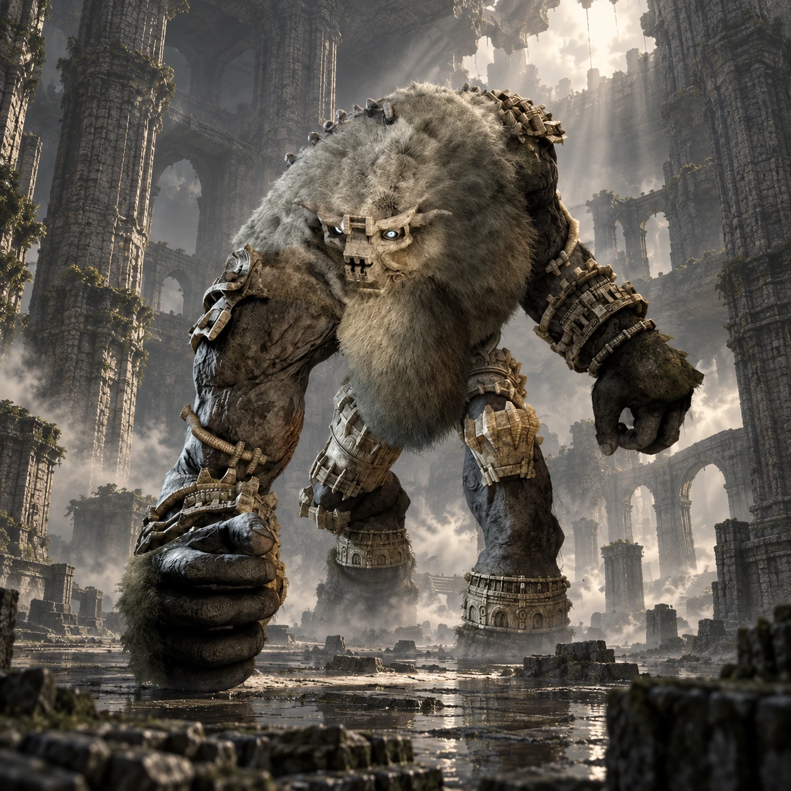

Dois nomes, duas origens
“Minotaur_B” é um nome de desenvolvimento. “Barba” é o nome popular entre os fãs, não um nome próprio apresentado durante o jogo.

Colosso 06 · Terras Proibidas
O peso de um gigante sob o templo.
No interior de uma construção enterrada entre rochas e areia, Barba avança por um salão de muros e colunas. Sua barba longa dá ao rosto uma presença singular.
Conheça o gigante01 / O gigante
Barba tem um tronco robusto, braços pesados e uma longa faixa de pelos que desce do queixo. A combinação de pedra e pelagem aproxima sua forma da de outros gigantes humanoides.
Sem uma grande arma nas mãos, ele impõe sua força por meio dos próprios golpes. O espaço fechado faz cada passo parecer ainda mais próximo de Wander.
*A medida indicada segue o guia Vandal, citado nas fontes. Os tamanhos variam entre fontes e escalas; esta é uma referência aproximada de altura, não uma medida oficial confirmada.
02 / O caminho
Viaje para sudoeste, atravessando a floresta até alcançar a região de areia. Procure a construção encravada na montanha.
Entre a pé e avance pelas plataformas do templo até o grande salão inferior. As barreiras alinhadas e a galeria de colunas ajudam a reconhecer a arena.
Abrir mapa das Terras Proibidas03 / Um olhar mais atento
“Minotaur_B” é um nome de desenvolvimento. “Barba” é o nome popular entre os fãs, não um nome próprio apresentado durante o jogo.
Minotaur_B compartilha o padrão de nome de desenvolvimento com Minotaur_A, Valus, e Minotaur_C, Argus.
As barreiras internas não resistem à passagem do gigante. A destruição acompanha sua perseguição pelo salão.
04 / O encontro
Algumas pistas para começar, deixando a descoberta da luta com você.
Dicas gerais para o modo Normal. A ficha não detalha todos os pontos vitais nem o desfecho do confronto.
Ficha baseada em registros da comunidade e guias de jogo. A arte é uma interpretação visual, não uma captura do jogo.